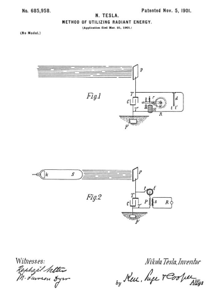

Descarga la patente original en esté enlace


Que se sepa que yo, NIKOLA TESLA , ciudadano de los Estados Unidos, que reside en el distrito de Manhattan, en la ciudad, condado y estado de Nueva York, he inventado ciertas mejoras nuevas y útiles en los métodos de utilización de energía radiante. , de la que se detalla a continuación, haciendo referencia a los dibujos que la acompañan y forman parte de la misma.
Es bien sabido que ciertas radiaciones, como las de luz ultravioleta, catódica, rayos Roentgen o similares, poseen la propiedad de cargar y descargar conductores de electricidad, siendo la descarga particularmente notable cuando el conductor sobre el cual inciden los rayos está electrificado negativamente. Estas radiaciones generalmente se consideran vibraciones de éter de longitudes de onda extremadamente pequeñas y, en explicación de los fenómenos señalados, algunas autoridades han asumido que ionizan o hacen conductora la atmósfera a través de la cual se propagan. Mis propios experimentos y observaciones, sin embargo, me llevan a conclusiones más de acuerdo con la teoría que hasta ahora expuse de que fuentes de tal energía radiante arrojan con gran velocidad partículas diminutas de materia que están fuertemente electrificadas.
Mi presente solicitud se basa en un descubrimiento que hice de que cuando se permite que los rayos o radiaciones del tipo anterior caigan sobre un cuerpo conductor aislado conectado a uno de los terminales de un condensador, mientras que el otro terminal del mismo se realiza mediante medios independientes para recibir o llevar electricidad, una corriente fluye hacia el condensador siempre que el cuerpo aislado esté expuesto a los rayos, y en las condiciones que se especifican a continuación se produce una acumulación indefinida de energía eléctrica en el condensador. Esta energía, después de un intervalo de tiempo adecuado, durante el cual se permite que actúen los rayos, puede manifestarse en una descarga potente, que puede utilizarse para el funcionamiento o control de dispositivos mecánicos o eléctricos o puede resultar útil de muchas otras formas.
Al aplicar mi descubrimiento, proporciono un condensador, preferiblemente de considerable capacidad electrostática, y conecto uno de sus terminales a una placa de metal aislada u otro cuerpo conductor expuesto a los rayos o corrientes de materia radiante. Es muy importante, particularmente en vista del hecho de que la energía eléctrica se suministra generalmente a un ritmo muy lento al condensador, construirlo con el mayor cuidado. Utilizo preferentemente la mejor calidad de mica como dieléctrico, tomando todas las precauciones posibles en el aislamiento de las armaduras, para que el instrumento pueda soportar grandes presiones eléctricas sin fugas y no deje electrificación perceptible al descargar instantáneamente. En la práctica, he encontrado que los mejores resultados se obtienen con condensadores tratados de la manera descrita en una patente que me fue otorgada el 23 de febrero de 1897, No. 577.671. Obviamente, las precauciones anteriores deberían observarse con más rigor cuanto más lenta sea la velocidad de carga y menor el intervalo de tiempo durante el cual se permite que la energía se acumule en el condensador. La placa aislada o el cuerpo conductor debe presentar una superficie tan grande como sea posible para los rayos o corrientes de materia, habiendo comprobado que la cantidad de energía que se le transmite por unidad de tiempo es en condiciones idénticas proporcionales al área expuesta, o casi. asi que. Además, la superficie debe estar limpia y preferiblemente muy pulida o amalgamada. El segundo terminal o inducido del condensador podrá estar conectado a uno de los polos de una batería u otra fuente de electricidad o a cualquier cuerpo u objeto conductor cualquiera que sea de tales propiedades o condicionado de tal manera que por sus medios se suministre electricidad de la señal requerida. a la terminal. Una forma sencilla de suministrar electricidad positiva o negativa al terminal es conectar la misma bien a un conductor aislado, apoyado a cierta altura en la atmósfera, o bien a un conductor puesto a tierra, el primero, como es sabido, proporcionando positivo y el segundo. Electricidad negativa. Como los rayos o supuestas corrientes de materia generalmente transmiten una carga positiva al primer terminal del condensador, que está conectado a la placa o el conductor mencionado anteriormente, normalmente conecto el segundo terminal del condensador a tierra, siendo esta la forma más conveniente de obtener electricidad negativa, prescindiendo de la necesidad de proporcionar una fuente artificial. Para utilizar para cualquier propósito útil la energía acumulada en el condensador, además conecto a los terminales del mismo un circuito que incluye un instrumento o aparato que se desea operar y otro instrumento o dispositivo para cerrar y abrir alternativamente el circuito. Este último puede ser cualquier forma de circuito-controlador, con partes fijas o móviles o electrodos, que pueden ser accionados por la energía almacenada o por medios independientes. Además conecto a los terminales del mismo un circuito que incluye un instrumento o aparato que se desea operar y otro instrumento o dispositivo para cerrar y abrir alternativamente el circuito. Este último puede ser cualquier forma de circuito-controlador, con partes fijas o móviles o electrodos, que pueden ser accionados por la energía almacenada o por medios independientes. Además conecto a los terminales del mismo un circuito que incluye un instrumento o aparato que se desea operar y otro instrumento o dispositivo para cerrar y abrir alternativamente el circuito. Este último puede ser cualquier forma de circuito-controlador, con partes fijas o móviles o electrodos, que pueden ser accionados por la energía almacenada o por medios independientes.
Los rayos o radiaciones que se utilizarán para el funcionamiento del aparato anteriormente descrito en términos generales pueden derivarse de una fuente natural, como el sol, o pueden producirse artificialmente por medios tales, por ejemplo, como una lámpara de arco, un tubo Roentgen y similares, y pueden emplearse para una gran variedad de propósitos útiles.
Mi descubrimiento se entenderá mejor a partir de la siguiente descripción detallada y los dibujos anexos, a los que ahora se hace referencia y en los que:
La figura 1 es un diagrama que muestra formas típicas de los dispositivos o elementos dispuestos y conectados al aplicar el método para el funcionamiento de un dispositivo o instrumento mecánico únicamente por la energía almacenada; y la figura 2 es una representación esquemática de una disposición modificada adecuada para propósitos especiales, con un circuito controlador accionado por medios independientes.
Con referencia a la Fig. 1, C es el condensador, P la placa aislada o cuerpo conductor, que está expuesta a los rayos, y P ' otra placa o conductor, todos unidos en serie, como se muestra. Los terminales TT ' del condensador también están conectados a un circuito que incluye un receptor R, que se va a operar, y un dispositivo de control del circuito d , que en este caso está compuesto por dos placas conductoras tt ' muy delgadas , colocadas en proximidad y gran movilidad, ya sea por su extrema flexibilidad o por el carácter de su apoyo. Para mejorar su acción, deben encerrarse en un receptáculo del que pueda salir el aire. El receptor R se muestra como compuesto por un electroimán M, una armadura móvila , un resorte retráctil b , y una rueda de trinquete w , provista de un trinquete de resorte r , que se pivota para la armadura a, como se ilustra. Dispuesto el aparato como se muestra, se encontrará que cuando las radiaciones del sol o de cualquier otra fuente capaz de producir los efectos antes descritos caen sobre la placa P, se producirá una acumulación de energía eléctrica en el condensador C. Creo que este fenómeno se explica mejor de la siguiente manera: el sol, así como otras fuentes de energía radiante, arrojan diminutas partículas de materia positivamente electrificada que, al chocar con la placa P, le comunican una carga eléctrica. El terminal opuesto del condensador está conectado al suelo, lo que puede considerarse como un vasto depósito de electricidad negativa, una corriente débil fluye continuamente hacia el condensador, y dado que estas supuestas partículas son de un radio o curvatura inconcebiblemente pequeño, y en consecuencia cargado a un potencial relativamente muy alto, esta carga del condensador puede continuar, como he descubierto en la práctica, casi indefinidamente, incluso hasta el punto de romper el dieléctrico. Obviamente, sea cual sea el circuito-controlador que se utilice, debería funcionar para cerrar el circuito en el que está incluido cuando el potencial en el condensador haya alcanzado la magnitud deseada. Así, en la Fig.2 cuando la presión eléctrica en los terminales TT' eleva a un cierto valor predeterminado las placas tt ' , atrayéndose entre sí, cierran el circuito conectado a los terminales. Esto permite un flujo de corriente que energiza el imán M, haciendo que dibujar abajo de la armadura un e impartir una rotación parcial a la trinquete ruedas w . A medida que cesa la corriente, el resorte b retrae el inducido sin, sin embargo, mover la rueda w . Con la interrupción de la corriente, las placas tt ' dejan de ser atraídas y separadas, restaurando así el circuito a su estado original.
Muchas aplicaciones útiles de este método de utilizar las radiaciones que emanan del sol u otra fuente y muchas formas de llevar a cabo las mismas se sugerirán de inmediato a partir de la descripción anterior. A modo de ilustración, se muestra una disposición modificada en la Fig.2, en la que la fuente S de energía radiante es una forma especial de tubo Roentgen ideado por mí que tiene solo un terminal k, generalmente de aluminio, en forma de media esfera con una superficie lisa y pulida en la parte frontal, de la que se desprenden los chorros. Puede excitarse conectándolo a uno de los terminales de cualquier generador de fuerza electromotriz suficientemente alta; pero cualquiera que sea el aparato que se utilice, es importante que el tubo se agote en un alto grado, ya que de lo contrario podría resultar completamente ineficaz. El circuito de trabajo o de descarga conectado a los terminales TT ' del condensador incluye en este caso el primario p de un transformador y un circuito-controlador que comprende un terminal fijo o escobilla ty un terminal móvil t 'en forma de rueda con segmentos conductores y aislantes que pueden girar a una velocidad arbitraria por cualquier medio adecuado. En relación inductiva al cable primario o bobina p hay un secundario s , generalmente de un número mucho mayor de vueltas, a cuyos extremos se conecta un receptor R. Los terminales del condensador se conectan como se indica, uno a una placa aislada P y el otro a una placa conectada a tierra P ' , cuando el tubo S se excita se emiten rayos o corrientes de materia del mismo, que transmiten una carga positiva a la placa P y al condensador-terminal T, mientras que el terminal T ' recibe continuamente electricidad negativa de la placa P '. Esto, como se explicó anteriormente, da como resultado una acumulación de energía eléctrica en el condensador, que continúa mientras el circuito que incluye el primario p esté interrumpido. Siempre que el circuito está cerrado, debido a la rotación del terminal t ' , la energía almacenada se descarga a través del primario p , dando lugar en el secundario s a corrientes inducidas que accionan el receptor R.
De lo que se ha dicho anteriormente se desprende claramente que si el terminal T 'está conectado a una placa que suministra electricidad positiva en lugar de negativa, los rayos deben transportar electricidad negativa a la placa P. La fuente S puede ser cualquier forma de tubo Roentgen o Lenard; pero de la teoría de la acción es obvio que para que sean muy efectivos los impulsos eléctricos que lo excitan deben ser total o al menos preponderantemente de un solo signo. Si se emplean corrientes alternas simétricas ordinarias, se debería prever que los rayos caigan sobre la placa P sólo durante aquellos períodos en los que produzcan el resultado deseado. Evidentemente, si las radiaciones de la fuente se detienen o interceptan o su intensidad varía de alguna manera, como interrumpiendo periódicamente o variando rítmicamente la corriente que excita la fuente, habrá cambios correspondientes en la acción sobre el receptor R, y así se pueden transmitir señales y producir muchos otros efectos útiles. Además, se entenderá que cualquier forma de cierre de circuito que responda o se ponga en funcionamiento cuando se almacena una cantidad predeterminada de energía en el condensador puede usarse en lugar del dispositivo específicamente descrito con referencia a la Fig. 1, y también que los detalles especiales de construcción y disposición de las diversas partes del aparato pueden variar mucho sin apartarse de la invención.
Habiendo descrito mi invento, lo que reclamo es:
24 de Diciembre de 1889. .
Nikola Tesla.